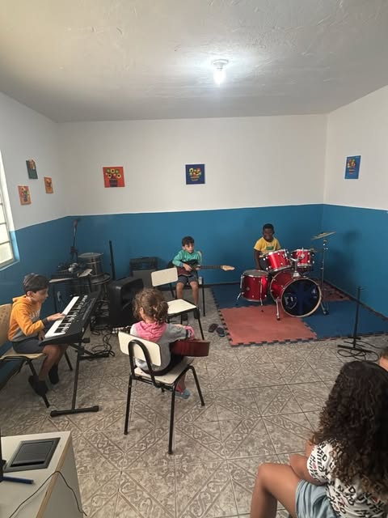
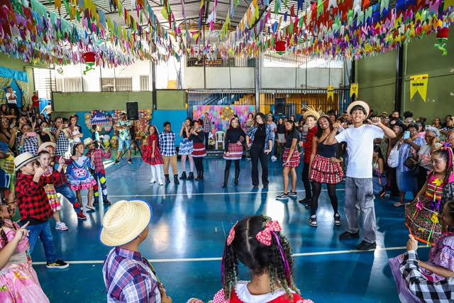
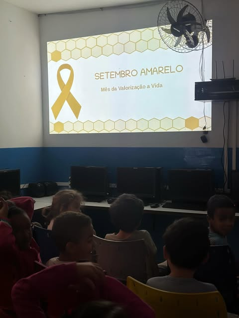
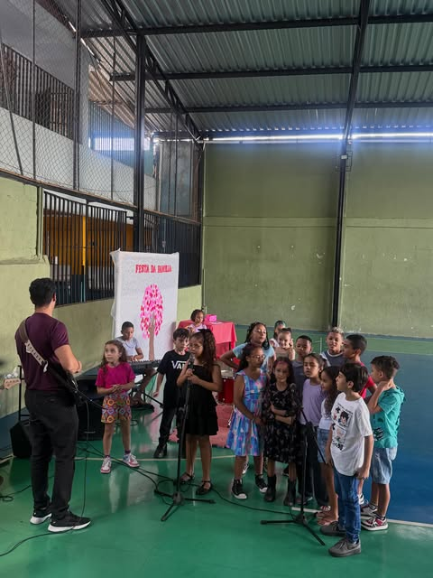
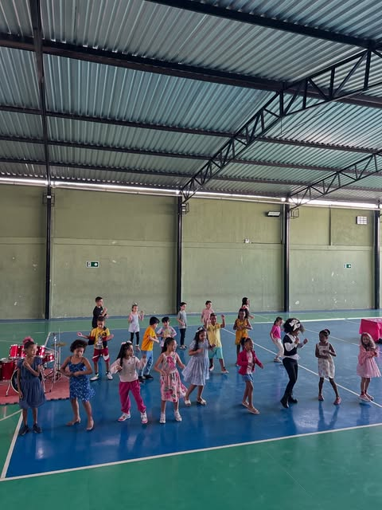
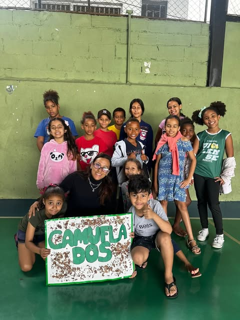
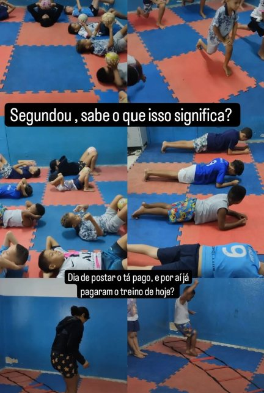
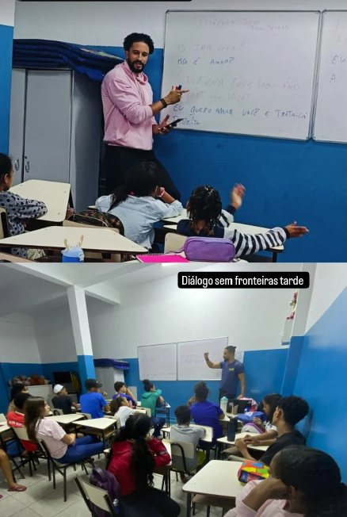
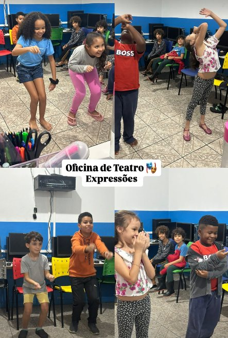

Atendimento Educacional Integrado
Atividades no contra turno escolar para crianças e adolescentes, com ensino-aprendizagem e socialização, no âmbito da Assistência Social de Belo Horizonte.
O Atendimento Educacional Integrado nasceu em 1997 como Programa de Socialização Infanto-Juvenil, em parceria com a Secretaria Municipal de Assistência Social (SMAS), atendendo inicialmente 25 crianças de 6 a 15 anos no contra turno escolar. O atendimento foi ampliado ao longo dos anos para 150 usuários, e em 2018 a SMED renomeou o programa para Atendimento Educacional Integrado.
O programa continua a atender crianças e adolescentes de 6 a 14 anos, com atividades alternativas de ensino-aprendizagem e socialização, no contra turno escolar. Em 2018, com recursos do FMDCA-BH (Fundo Municipal dos Direitos da Criança e do Adolescente), via edital do CMDCA-BH, o Projeto Nós da REDE ampliou a faixa etária atendida para até 16 anos, com atividades de Mídias Digitais, Oficina da Palavra e Musicalização.
- Atendimento a crianças e adolescentes de 6 a 14 anos (até 16 anos pelo Projeto Nós da REDE);
- Atividades no contra turno escolar: ensino-aprendizagem e socialização;
- Mídias Digitais, Oficina da Palavra e Musicalização;
- Parceria com a SMED e recursos do FMDCA-BH.
Um pouco das nossas oficinas
Registros do dia a dia do Atendimento Educacional Integrado. Clique em qualquer imagem para ampliar.









Quer saber mais sobre este projeto?
Fale com a nossa equipe e tire suas dúvidas sobre inscrição, turmas e parcerias.
Falar com o GDECOM Ver todos os projetos